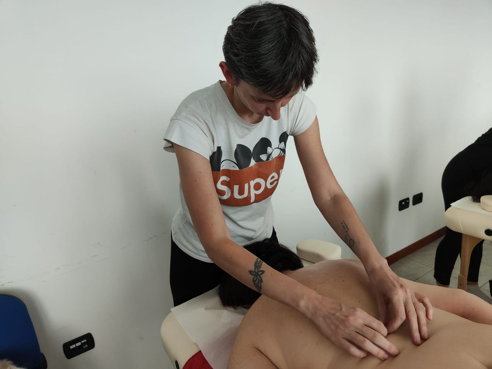
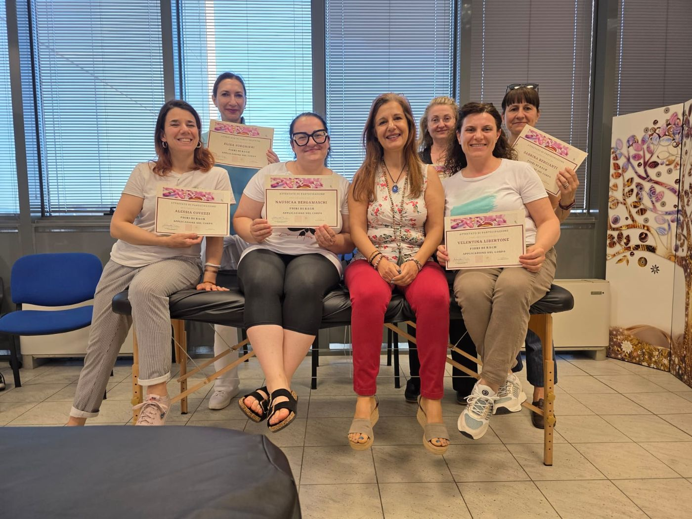

Diventa Operatore Olistico. In due anni, con le mani sul lettino.
Il percorso biennale di Olistika Academy ti forma nelle arti manuali: massaggio, riflessologia, Medicina Tradizionale Cinese, aromaterapia e floriterapia. In aula a Modena, nel fine settimana, in piccoli gruppi.
- Inizio 24 ottobre 2026
- Nel fine settimana
- In aula, piccoli gruppi
- Anche a rate mensili
«Avevo trovato un percorso online, però non c'era nulla di pratico, ma solo teorico. Poi trovo il percorso della Manu. E oggi è la cosa migliore che ho fatto per me.»
Per chi vuole fare del benessere il proprio lavoro
E per chi vuole imparare davvero, non collezionare un attestato.
- Vuoi cambiare lavoro e cerchi una formazione seria, in presenza, che ti porti a lavorare con le persone.
- Hai provato un corso online e ti è mancata la pratica.
- Lavori già nel benessere e vuoi una visione più completa della persona.
- Parti da zero. All'inizio impariamo dove mettere le mani: una tecnica, una sequenza, un protocollo.

Il calendario del primo anno
Dalle basi dell'anatomia al massaggio olistico, dalla riflessologia ai meridiani energetici. Si parte sabato 24 ottobre 2026.
- 24 ottobre 2026Anatomia palpatoriaDavide Scuderi
- 25 ottobreAnatomia energeticaManuela Pignatari e Antonella Punta
- 27 · 28 · 29 novembreMassaggio olistico baseManuela Pignatari
- 19 dicembreTecniche di massaggio e deontologiaManuela Pignatari
- 20 dicembreTutoraggioManuela Pignatari
- 22 · 23 · 24 gennaio 2027Riflessologia olistica baseManuela Pignatari
- 27 · 28 febbraioReiki 1° livelloAlessandra Barbanti
- 20 · 21 marzoI meridiani energeticiManuela Pignatari e Antonella Punta
- 17 · 18 aprileMassaggio drenanteManuela Pignatari
- 15 maggioTutoraggioManuela Pignatari
- 16 maggioAromaterapia funzionaleManuela Pignatari
- 12 · 13 giugnoMassaggio del fuocoManuela Pignatari
- 10 · 11 luglioTecniche di sblocco 1Manuela Pignatari
In tutto 22 giornate in aula e 65 ore di pratica documentata.
Corso facoltativo: Fiori di Bach, le basi
20 e 21 febbraio 2027, con Antonietta Triolo. Per gli allievi del biennio costa 100 € anziché 180 €.
L'offerta vale solo per questa edizione e solo prenotando entro il 20 novembre 2026.
Le materie del secondo anno
Si approfondisce: nuove tecniche di massaggio, la Medicina Tradizionale Cinese, la lettura del piede e della mano. Altre 22 giornate in aula e 65 ore di pratica documentata.
- Massaggio miofascialeManuela Pignatari
- Massaggio californianoManuela Pignatari
- Massaggio metamericoManuela Pignatari
- M.T.C. · Massaggio bioemozionaleManuela Pignatari
- M.T.C. · I punti di equilibrio e l'uso della moxaManuela Pignatari e Antonella Punta
- Riflessologia morfologica · Lettura del piedeManuela Pignatari
- Riflessologia della manoManuela Pignatari e Antonella Punta
- Fiori di Bach · Applicazione sul corpoAntonietta Triolo
- Aromaterapia emozionaleAna Claudia Huszak
- Il risveglio della pinealeAna Claudia Huszak
- Tecniche di sblocco 2Manuela Pignatari
- Settembre 2028 · Esame finaleProva d'esame con elaborato scritto
Corsi facoltativi del secondo anno
Massaggio viscerale 1° livello e Anatomia & Biomeccanica, con Davide Scuderi. Non sono compresi nel programma del biennio: gli allievi possono frequentarli a prezzo scontato.
Le materie potrebbero subire variazioni.
Quanto costa il biennio
I corsi facoltativi non sono compresi.
Di solito si paga così
- 300 € + IVA all'iscrizione, per confermare il posto.
- 10 rate da 250 € + IVA, una al mese da ottobre a luglio.
Una scuola, non un videocorso

La tecnica si impara. L'ascolto si coltiva.
Davanti alle nostre mani non c'è un protocollo: c'è una Persona. Per questo il biennio non si ferma alle sequenze. Ti insegna a rispondere al «qui e ora» di chi hai davanti e a creare il trattamento adatto a lei.
L'operatore olistico non cura e non fa diagnosi: favorisce equilibrio e prevenzione, lavorando sulla persona nella sua interezza.
I docenti del biennio
- Manuela PignatariMassaggio, riflessologia, Medicina Tradizionale Cinese, aromaterapia funzionale, tecniche di sblocco, tutoraggio
- Davide ScuderiAnatomia palpatoria; corsi facoltativi di massaggio viscerale e di anatomia e biomeccanica
- Antonella PuntaAnatomia energetica, meridiani energetici, punti di equilibrio e moxa, riflessologia della mano
- Antonietta TrioloFiori di Bach
- Alessandra BarbantiReiki 1° livello
- Ana Claudia HuszakAromaterapia emozionale, Il risveglio della pineale
Prima di iscriverti
Quando inizia e in che giorni si frequenta?
Il primo anno inizia sabato 24 ottobre 2026 e finisce l'11 luglio 2027. Le lezioni sono nel fine settimana, uno al mese; a novembre e a gennaio si comincia dal venerdì. In tutto 22 giornate in aula, più 65 ore di pratica documentata. Il calendario completo è in questa pagina.
Quanto costa il corso per operatore olistico?
2.800 € + IVA per ogni anno. Di solito si pagano 300 € + IVA all'iscrizione, per confermare il posto, e poi 10 rate da 250 € + IVA, una al mese da ottobre a luglio.
Come si diventa operatore olistico in Italia?
È una professione libera, disciplinata dalla Legge 4/2013: non esistono una laurea o un albo. Ci si forma in una scuola con un percorso strutturato di teoria e pratica, come questo biennio, che si conclude con una prova d'esame e un elaborato scritto.
Servono requisiti o esperienza?
Non serve esperienza di massaggio: si parte dalle basi, con l'anatomia palpatoria e il massaggio olistico base. Nel colloquio conoscitivo vediamo insieme se il biennio è il punto giusto da cui iniziare.
È un corso online?
No. Si impara in presenza, in via Capilupi 21 a Modena, con pratica sul lettino in piccoli gruppi.
Che differenza c'è con il fisioterapista o l'estetista?
Il fisioterapista è un professionista sanitario e si occupa di riabilitazione e patologie. L'estetista di cura estetica e bellezza. L'operatore olistico lavora sul benessere globale della persona con tecniche naturali, manuali ed energetiche, senza diagnosi né terapie.
Non devi decidere nulla oggi
Prenota un colloquio conoscitivo con Manuela: ti spiega il programma e risponde alle tue domande. I gruppi sono piccoli.
- Referente Manuela Pignatari
- WhatsApp 393 965 2131
- Email manuela.pignatari@gmail.com
- Dove Via Capilupi 21, 41122 Modena